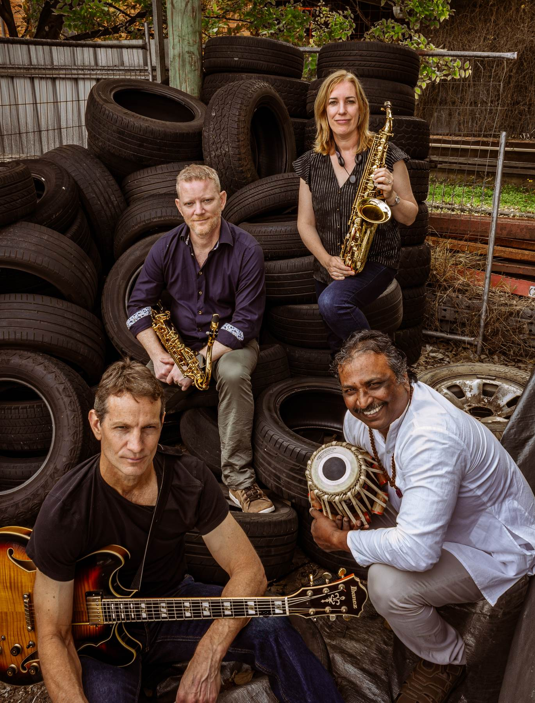
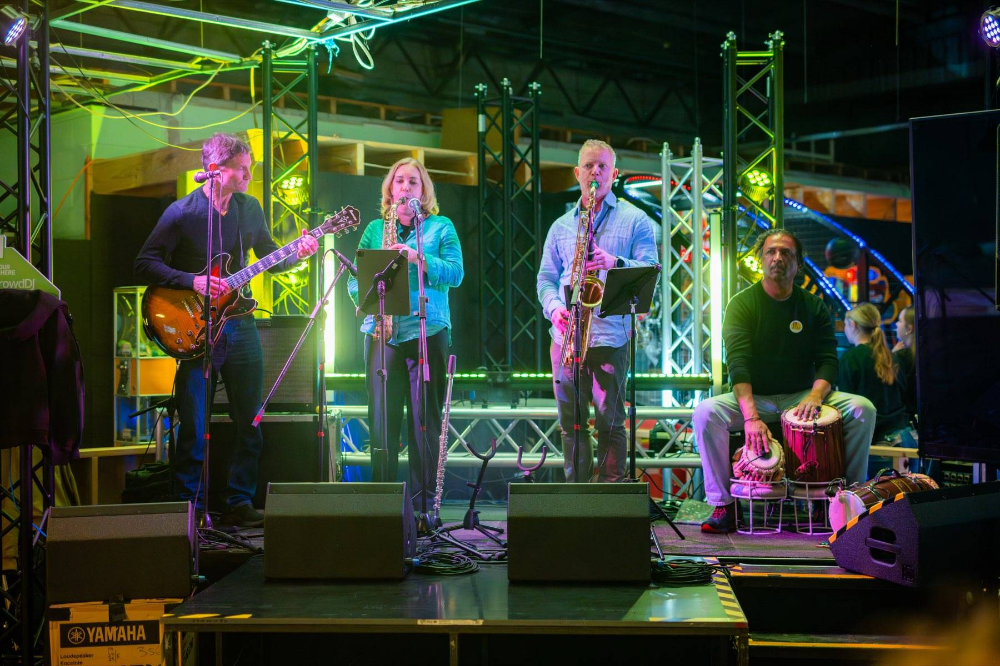
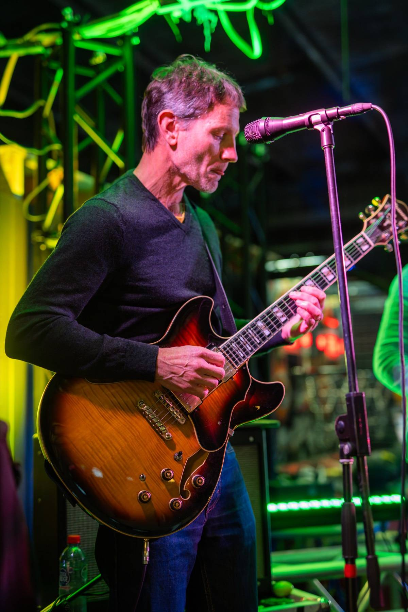
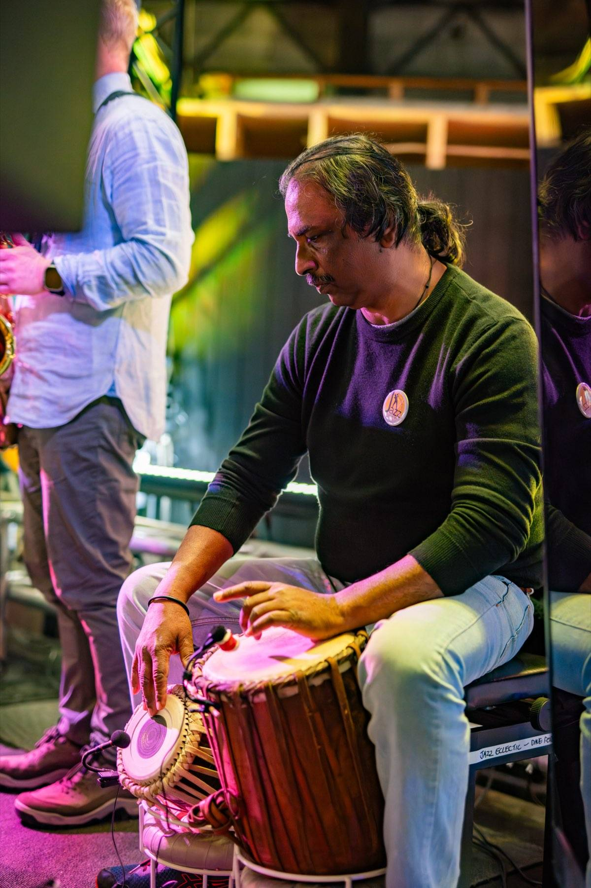
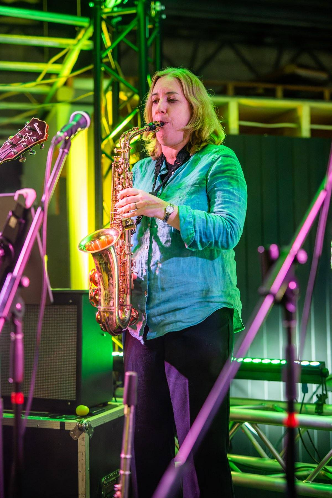
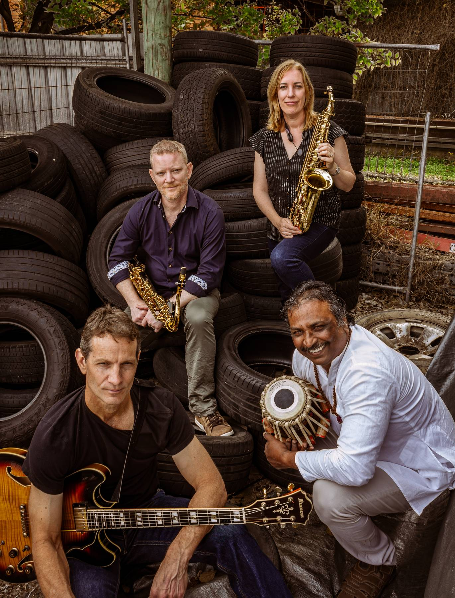
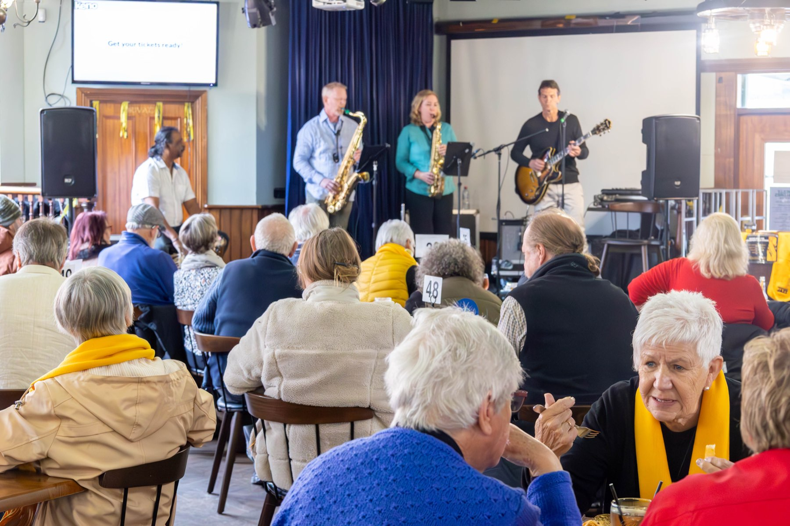
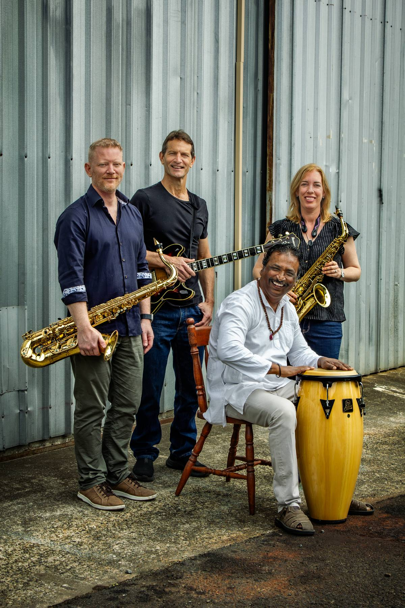

Brisbane · Est. 2023
Jazz Eclectic
Sonorous saxophones, groovin' guitar, mesmerising tablas and more…
The Band
Liner Notes
Jazz Eclectic, formed in 2023, is a dynamic ensemble featuring Dave Fernandez on tablas and dholak, Katrina Fawns on alto sax and flute, Trent Jordan on tenor and soprano sax, and Calvin Raison on guitar. Our band name reflects our repertoire's diversity, encompassing a wide range of jazz styles, from standards and Latin jazz to funk and modern popular tunes.
Our unique lineup creates a distinctive sound characterised by beautiful saxophone harmonies and innovative rhythms introduced through Indian percussion instruments and guitar. Our performances feature songs outside the standard jazz repertoire — alongside lesser-heard standards and Latin jazz pieces — arranged to groove and engage.
Dave Fernandez
Tablas & Dholak
Katrina Fawns
Alto Sax & Flute
Trent Jordan
Tenor & Soprano Sax
Calvin Raison
Guitar
On the Bill
Recent Shows
- Oct 2025City Sounds · Queen St Mall, Brisbane
- Aug 2025World of Cultures · Kingston Butter Factory
- Jul 2025Jumpers & Jazz Festival · Warwick
- Jan 2025City Sounds · Queen St Mall, Brisbane
- Nov 2024Donald Simpson Centre · Cleveland
- Jul 2024Jumpers & Jazz · Warwick, St Marks precinct
- Jul 2024Devonport Jazz Festival · Devonport Country Club & Molly Malones
- Jun 2024City Sounds · Queen St Mall, Brisbane
- Apr 2024Donald Simpson Centre · Cleveland
- Mar 2024Junk Bar · Ashgrove
- Mar 2024City Sounds · Queen St Mall, Brisbane
Now Spinning
Side A
7 tracks · live selections — tap a track to listen
- 01Starman4:45
- 02Besame Mucho4:40
- 03Straight No Chaser4:48
- 04Just the Two of Us5:35
- 05Take 55:33
- 06Flamenco Ain't Bad6:01
- 07Afro Blue5:47
On Stage
Press Photos







Word on the Street
We would like to convey our thanks and gratitude for the wonderful entertainment you provided. We have had nothing but compliments about your performance — would love to see the same in 2025 if possible.
— Sharon, Art@St Mark's, following Jumpers & Jazz Festival
Get in Touch
Book the Band
For bookings, enquiries, or just to say hello.